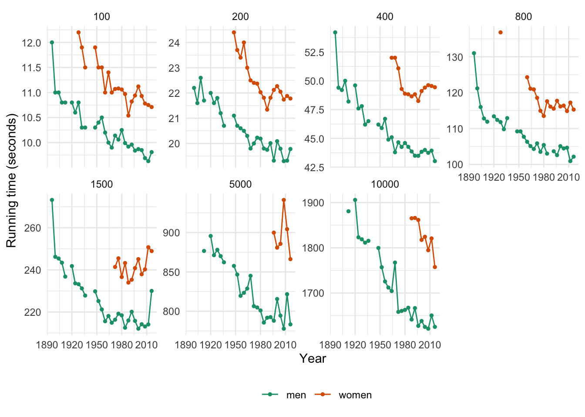
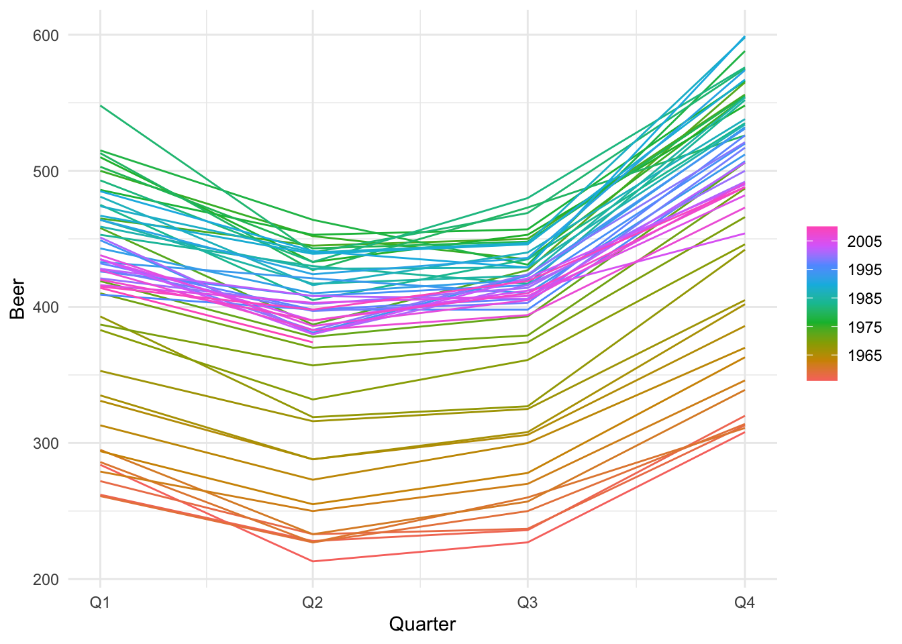
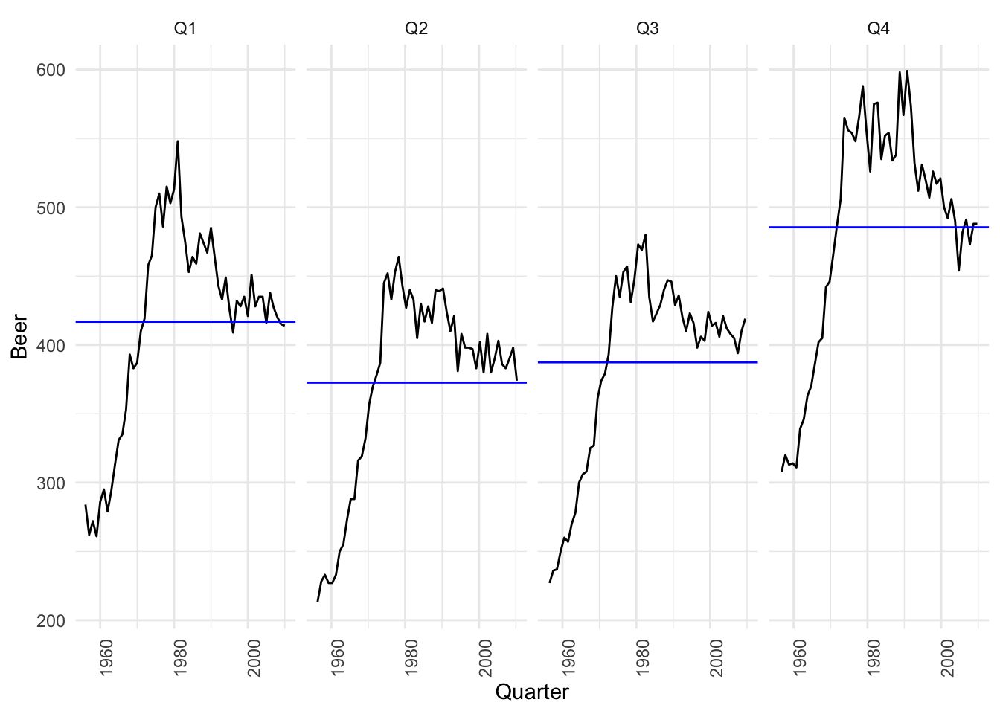
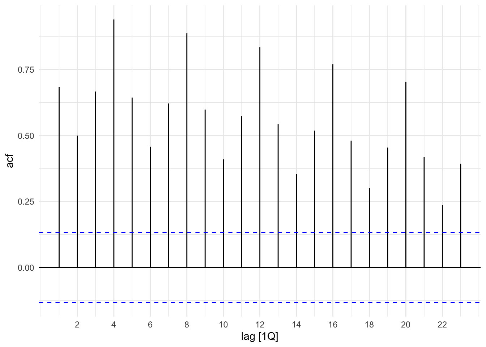
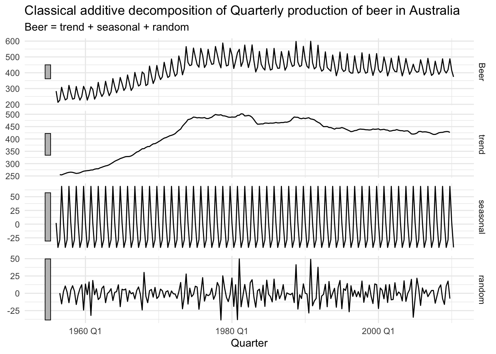
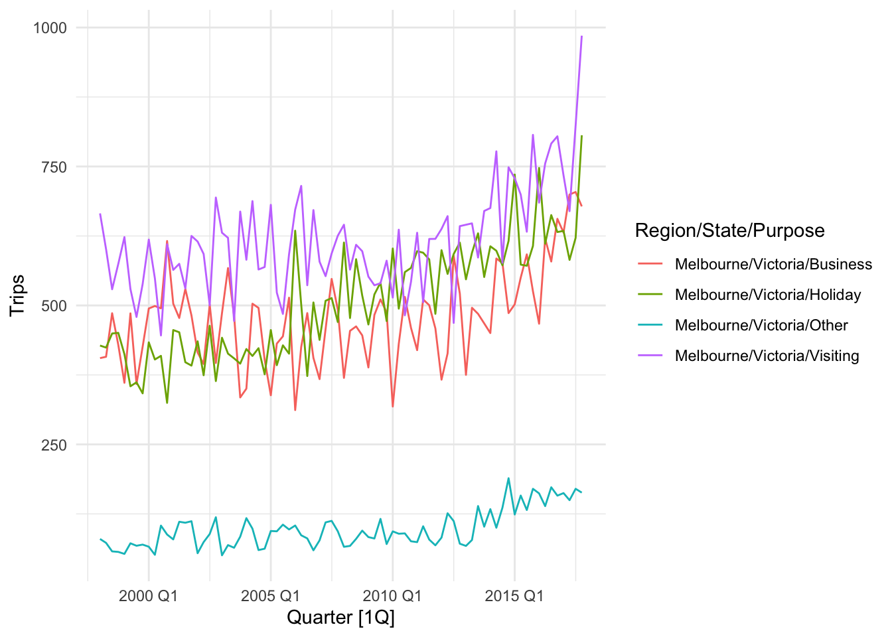
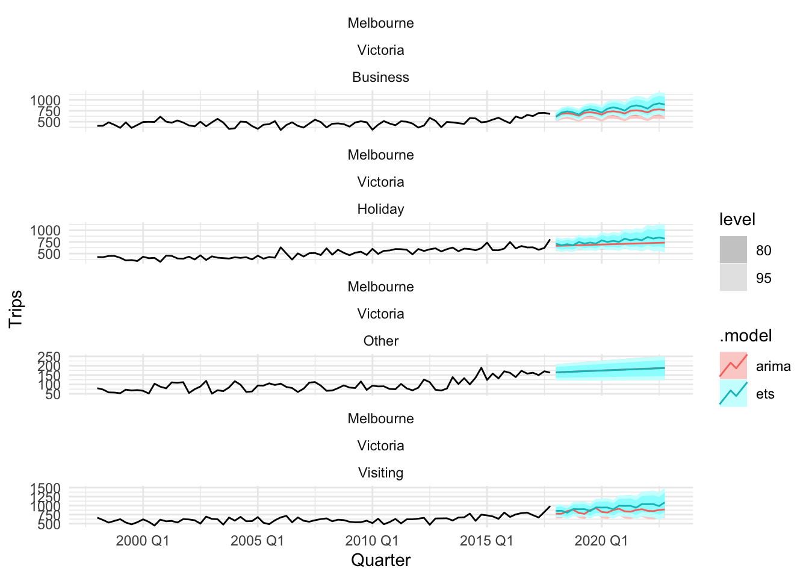
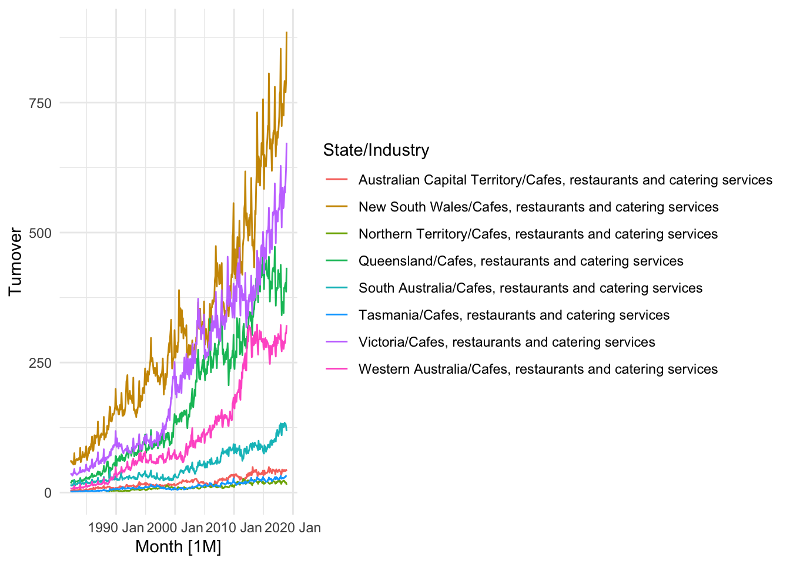
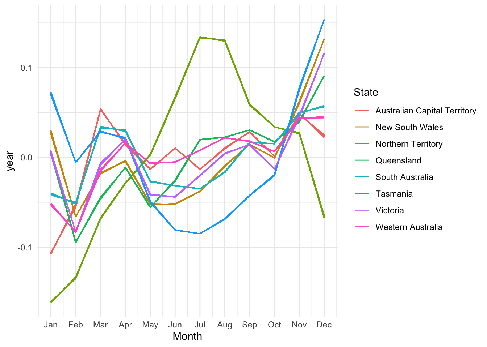

tidyverts ecosystem은 시계열 자료에 관한 분석을 tidyverse principle로 수행할 수 있게끔 해주는 패키지 묶음입니다. 전처리, 시각화부터 모델링, 예측까지 모든 과정을 “tidy” framework로 진행하게 해주죠. tidyverse priciple이 데이터 전처리에 있어서 얼마나 많은 업무 생산성을 가져다 주는지 우리는 이미 알고있습니다. 시계열 자료를 자주 다루는 사람이라면 꼭 배워둘 만한 패키지죠.😄 tidyverts ecosystem을 이루는 대부분의 패키지들은 {fpp3}으로 불러올 수 있습니다. {tsibbletalk}은 {shiny}와 함께 동작하는 반응형 그래픽을 제공하는 패키지로 본 튜토리얼에서는 생략하겠습니다:
library(fpp3)library(fable.prophet)library(nycflights13) # for nycflights13 datalibrary(purrr) # for map()ggplot2::theme_set(theme_minimal())loaded_package <-c("fpp3", "fable.prophet", "nycflights13", "purrr").version <-map(loaded_package, packageVersion)names(.version) <- loaded_package.version
{tsibble}은 일반적인 시계열 자료를 tibble 형태로 표현할 수 있게해줍니다. 우리는 tsibble()을 통해 tidy한 자료에 대해 수행해왔던 {tidyverse}를 이용한 wrangling을 수행할 수 있습니다. 즉, tidyverse ecosystem이 tibble 객체를 기반으로 동작하듯이, tidyverts ecosytem은 tsibble 객체를 기반으로 동작합니다. tsibble 객체가 갖는 기본적인 원칙은 다음과 같습니다:
index: 과거부터 현재까지 순서화된 자료값의 관측 시간
key: 시간에 따른 관측 단위를 정의하는 변수의 집합
각 관측치는 index와 key를 통해 유일하게(uniquely) 식별되어야만 함
각 관측치는 등간격으로 관측된 자료여야만 함
즉, 티블(데이터프레임)을 tsibble로 변환하기(coerce) 위해서는 key와 index를 명시해주어야 합니다. 예를 들어, 다음과 같은 {nycflights13} 패키지의 weather 자료를 이용해보겠습니다:
weather_tsbl <-as_tsibble(weather_simple, key = origin, index = time_hour)weather_tsbl
여기서는 자료 자체가 출발지(origin) 별로 기록된 다중(multiple) 시계열에 해당하므로, key를 origin으로 잡아줬지만, 만약 자료가 단일(univariate) 시계열에 해당한다면 해당 key는 설정을 하지 않으면 됩니다(see package?tsibble and vignette("intro-tsibble") for details). 그리고, 사실 tsibble()은 irregular time interval을 갖는 자료에 대해서도 적용이 가능합니다. as_tsibble은 regular = TRUE 옵션이 default로 설정되는데, 이를 FALSE로 바꿔주면 되며, 이러한 irregular time interval을 갖는 tsibble 객체의 경우는 [!] 표시를 통해 확인할 수 있습니다:
1.2 Turn impicit missing values into explicit missing values
간혹 시계열 자료에는 암묵적 결측치(implicit missing values)가 존재하는 경우가 있습니다. 암묵적 결측치가 존재하는 시계열 자료가 일정한 시간 간격으로 수집되었을 경우, 우리는 fill_gaps()를 이용해 암묵적 결측을 명시적으로(explicit) 바꿀 수 있어요. 4년간 수집된 연도별 키위, 체리의 수확량(단위: kg)에 관한 자료를 직접 만들어서 fill_gaps()의 쓰임에 대해 알아봅시다. 본 자료에는 암묵적 결측이 존재합니다:
harvest <-tsibble(year =c(2010, 2011, 2013, 2011, 2012, 2014),fruit =rep(c("kiwi", "cherry"), each =3),kilo =sample(1:10, size =6),key = fruit, index = year)harvest
암묵적 결측이란, 예를 들어 위 자료처럼 체리 생산량이 2010년에는 기록되지 않았음에도 불구하고 행이 생략되어있는 것을 말합니다. NA로 명시는 다음과 같이 손쉽게 가능합니다:
fill_gaps(harvest, .full =TRUE)
다음의 각각 시작점, 끝점에 대해서만 결측치를 명시할 수도 있습니다:
# at the same starting point across unitsfill_gaps(harvest, .full =start())# at the same end point across unitsfill_gaps(harvest, .full =end())
.full = FALSE를 설정할 경우(fill_gaps()의 default 옵션에 해당), 각 key 내의 period에서 발생한 결측에 대해서만 명시가 이루어집니다.
fill_gaps(harvest, .full =FALSE)
특정값으로의 명시도 손쉽게 수행이 가능해요.
harvest %>%fill_gaps(kilo = 0L)
변수에 대해 함수를 적용하여 명시도 가능합니다. sum()을 이용하여 합으로 명시해보았습니다:
harvest %>%fill_gaps(kilo =sum(kilo))
key에 대해 group_by를 통해 각 그룹에 대해 함수를 적용할 수도 있죠. 이번에는 median()을 통해 중위수로 명시해보았습니다:
index_by()와 summarise()를 이용하면 관심있는 변수에 대해 특정 시간 주기(e.g. monthly)에 대해 함수(e.g. 합계: sum(), 평균: mean())를 적용할 수 있어요. index_by는 as.Date(), tsibble::yearweek(), tsibble::yearmonth(), tsibble::yearquarter(), 뿐만 아니라 {lubridate} 계열의 함수와 함께 사용됩니다. 예를 들어, weather 자료의 월별 평균 기온, 총 강수량은 다음과 같이 yearmonth()에 index 변수를 .으로 나타내어 계산할 수 있습니다.
index_by()+summarise()는 irregular time interval을 갖는 tsibble에 대해서도 수행이 가능합니다.
2 tsibbledata
{tsibbledata}는 tsibble 형태의 다양한 예제 자료를 제공해줍니다. 어떤 패키지에 대한 튜토리얼을 진행할 때, 적절한 자료들이 필요로 되는데, 이렇게 예제 자료를 직접적으로 제공해준다는 점에서 R 유저들에 대한 배려가 담겨있다는 생각이 드네요. 예를 들어, 다음의 olympic_running은 4년 주기로 수집된 올림픽 달리기 종목의 성별 최고기록에 관한 자료입니다(see ?olympic_running for details).
olympic_running
이 자료를 이용하여 달리기 종목별 최고 기록에 대한 시도표를 성별로 나누어서 그려보았습니다. 참고로, 1916, 1940, 1944년의 경우 세계대전으로 인해 결측 처리되었습니다.
ggplot(olympic_running, aes(x = Year, y = Time, colour = Sex)) +geom_line() +geom_point(size =1) +facet_wrap(~ Length, scales ="free_y", nrow =2) +theme_minimal() +scale_color_brewer(palette ="Dark2") +theme(legend.position ="bottom", legend.title =element_blank()) +ylab("Running time (seconds)")

3 feasts
{feasts}는 Feature Extraction And Statistics for Time Series의 약자로, 시계열 자료분석에 쓰이는 여러가지 툴을 제공해줍니다. tsibble 객체와 함께 동작하며, 시계열의 분해, feature 추출(e.g. 추세, 계절성), 시각화 등을 수행할 때 쓰입니다. 아울러, {feasts}를 통한 시계열 자료분석은 다음 섹션에서 소개할 tidyverts ecosystem의 예측 모델링 부분을 담당하는 {fable} 패키지와 긴밀하게 결합하여 사용됩니다.
3.1 Graphics
시각화는 주로 시계열 자료의 패턴을 이해하기 위한 첫 단계에 많이 이루어집니다. {feasts}는 시계열의 패턴을 {ggplot2}를 사용해 자유롭게 커스텀할 수 있는 그래픽을 제공합니다. 첫 번째로는 gg_season을 이용한 계절성(seasonality) 시각화입니다. 시각화에 사용된 자료 tsibbledata::aus_production은 호주의 맥주, 담배 등의 품목에 관한 분기별 생산지표 추정치에 관한 자료입니다. 맥주의 분기별 생산지표에 관한 계절성 시각화를 수행해보았습니다:
aus_production %>%gg_season(Beer)

다음으로 gg_subseries()를 이용하면 시계열의 각 season별로 시각화가 가능합니다. 예를 들어, aus_production과 같은 분기별 자료의 경우 분기별 패턴에 대한 시각화를 쉽게 수행할 수 있습니다:
aus_production %>%gg_subseries(Beer)

gg_lag()를 이용하면 원자료와 시차(lag)의 산점도를 season별로 나누어 그릴 수 있습니다:
분기별 자료의 특성상, lag 4와 8 그림을 보면 각 season별로 원자료와의 관계가 \(y=x\) 직선에 잘 놓여있는 것을 캐치할 수 있죠. 마지막으로 ACF 그림도 손쉽게 그릴 수 있습니다:
aus_production %>%ACF(Beer) %>%autoplot()

3.2 Decompositions
시계열 분해(decomposition)는 시계열 자료분석에서 흔히 수행되는 작업 중 하나이며, 이는 시계열에 대한 패턴을 이해하는데에 큰 도움을 줍니다. 그리고, 추후 예측 모델링을 정교하게 하는 것에도 상당한 도움을 준다. 즉, 시계열 분해는 본인이 분석하고자 하는 시계열의 패턴을 좀 더 정교하게 캐치하고 예측 성능을 향상시키기 위한 목적으로 꼭 필요로 되는 사전 작업이라고 할 수 있습니다. 본 튜토리얼에서는 {feasts}에서 제공하고 있는 2가지 시계열 분해 방법에 대해 소개하려고 합니다.
3.2.1 Classical decompostion
classical decompostion은 1920년대에 고안된 방법입니다. 오래된 방법론인 만큼 요즘 쓰이는 시계열 분해 방법들의 초석이 되는 방법이라고 할 수 있으며, 다른 방법들에 비해 상대적으로 간단하다는 장점이 있습니다. classical decompostion은 가법 분해와 승법 분해가 있습니다. 두 방법은 계절성의 반영 방식에 따라 나뉩니다(e.g. 분기별 자료 \(m = 4\), 월별 자료 \(m = 12\), 일별 자료 \(m = 7\)). 보통 가법 classical decompostion의 경우 계절성이 추세에 따라 무관하게 일정한 크기를 유지할 때 사용하며, 반대로 계절성의 크기가 추세의 크기에 따라 변화하는 경우에는 승법 classical decompostion을 사용합니다. 승법 계절성 classical decompostion는 계절 성분이 연도에 따라 상수라고 가정한채로 진행되며, 승법 계절성에서 계절 성분을 형성하는 \(m\)은 계절 지수(seasonal indices)라 불리기도 합니다.
classical decompostion의 자세한 분해 과정은 여기를 참고해주시기 바랍니다. 여기서는 바로 R을 이용한 튜토리얼을 진행하겠습니다. 앞서 사용했던 자료의 맥주 생산지표를 가법 classical decomposition을 통해 분해해보겠습니다.
dcmp <- aus_production %>%model(classical_decomposition(Beer, type ="additive"))components(dcmp)
먼저, 분해된 시계열의 요소들은 componenets()로 불러올 수 있습니다. 그리고, 이 components()에 대해 autoplot()을 수행해주면 다음과 같이 시각화를 수행할 수 있습니다:
dcmp %>%components() %>%autoplot() +labs(title ="Classical additive decomposition of Quarterly production of beer in Australia")

3.2.2 STL decomposition
STL은 “Seasonal and Trend decomposition using Loess”의 준말로 다재다능(versatile)하고 로버스트한 시계열 분해 방법에 해당합니다. 그리고, 여기서 loess란 Local regression의 준말로 자료를 비선형으로 추정하는 방법 중 하나에 해당합니다. STL은 앞서 소개한 classical decomposition, 그리고 {feasts}에서 제공하는 또 다른 시계열 분해 방법 SEATS, X-11과 비교하여 몇몇 이점을 갖는다. 자세한 사항은 여기를 참고해주세요. 본 글은 tidyverts ecosystem에 대한 소개 이므로, deep한 이론 정리는 추후에 fpp3 책을 공부하면서 하나하나 정리해나가겠습니다. 일단 바로 실습으로 넘어가겠습니다.😊 다음은 STL decomposition을 이용하여 시계열의 추세 요소는 window = 7을 통해 좀 더 flexible하게 추정하고, 계절 패턴의 경우는 window = "periodic"으로 하여 고정(fixed)되도록 하였습니다(see ?STL for details). 여기서. window란, 창을 말하며 자료를 여러 창으로 잘게 쪼갤수록 더 flexible하고 복잡한 함수를 추정하게 됩니다. splines에 지식이 있는 분들은 이해하기 쉬울거라고 생각합니다.
{feast}에서 소개할 마지막 기능은 시계열의 feature(e.g. ACF)와 통계량(e.g. 평균)을 뽑아내는 것입니다. {feast}에서는 feature() 함수를 통해 많은 종류의 features들에 대한 정보를 제공합니다만, 본 튜토리얼에서는 시계열의 평균, 분위수, ACF를 뽑아내는 방법에 대해서만 소개하겠습니다(see ?feature for details). 그 외 다른 features들에 관심이 있으시다면, 여기를 참고해주세요.
3.3.1 Some simple statistics
먼저, 시계열의 평균과 분위수를 뽑는 방법에 대해 소개하겠습니다. 평균, 분위수 등 시계열의 기본적인 통계량은 feature()와 R의 기본 함수(e.g. mean(), median())들을 이용해 간편하게 계산할 수 있습니다. 여기서 이용할 자료 tourism()은 지역, 주, 목적별로 나눠진 1998-2016년 분기별 호주 여행객수에 관한 자료로, 지역, 주, 여행 목적별 여행객 수의 전체 평균과 분위수를 계산해봤습니다:
{fable} 패키지는 tsibble 객체와 함께 tidy한 format으로 시계열 예측 모델링을 수행할 수 있게해줍니다. {tidymodels} 패키지에 대한 이해가 있으신 분들이라면 어렵지 않으실거라 생각합니다. {tidymodels}과 마찬가지로 {fable}은 여러 시계열에 대해 여러 시계열 모형에 대한 추정, 비교, 결합, 예측 등을 가능하게해줍니다.
본격적인 튜토리얼 시작에 앞서, tourism() 자료를 이용할 것이며, 4가지 여행 목적(“business”, “holiday”, “visiting friends and relatives”, “other reasons”)으로 분해할 수 있는 호주 멜버른(Melbourne)의 일별 여행객 수를 예측하는 것에 관심이 있다고 가정합니다. 각 계열의 첫 번째 관측값은 다음과 같습니다:
우리가 추정하고자 하는 변수는 Trips(일별 여행객 수, 단위: 천)입니다. 해당 계열들의 시도표를 보면, 추세와 약한 계절성이 명확하게 존재함을 알 수 있습니다.
tourism_melb %>%autoplot(Trips)

{fable} 패키지에서 폭넓게 쓰이는 시계열 예측 모형은 ETS와 ARIMA 모형입니다. 먼저, ETS 모형은 추세 요소와 계절 요소를 가법, 승법, 감쇠효과 등을 반영하여 시계열을 모델링하는 지수평활법(exponential smoothing)을 통계적 모형으로 확장시킨 것에 해당합니다. 통계적 모형으로의 확장은 오차항 \(\epsilon_t\)에 대해 통계적 분포라 할 수 있는, 평균이 0이고 분산이 \(\sigma^2\)인 가우스 백색잡음 과정(gaussian white noise process)을 가정함으로써 이루어집니다. 즉, ETS 모형의 알파벳 각각은 E(error, 오차), T(trend, 추세), S(seasonal, 계절성)을 나타내며, 각 요소들을 모델링하는 방식(가법, 승법, 가법감쇠(damped), 승법감쇠)에 따라 ETS 모형의 종류가 나뉘어집니다. 아울러, 각 모델은 관측된 자료를 설명하는 측정식(measurement equations)과 시간에 따라 변화하는 관측되지 않은 요소(level, trend, seasonal)들을 설명하는 상태식(state equations)으로 구성되는데, 이러한 이유에서 우리는 ETS 모형을 혁신상태공간모형을 이루는 지수평활법(innovations state space models for exponential smoothing)이라고 표현하기도 합니다(See here for detail). 두 번째로, ARIMA 모형은 시계열의 현재값을 과거값과 과거 예측 오차로 설명하는 대표적인 통계적 시계열 예측모형으로, 자세한 설명은 생략하겠습니다. ARIMA 모형에 대한 개념이 없으신 분들은 여기를 참고해주시기 바랍니다.
두 모형에 대한 간략한 개념 설명은 이쯤에서 마치기로 하고, 이제 이 모형들을 {fable} 패키지를 이용해 어떻게 적합을 수행하면 되는지 보겠습니다. {fable}을 이용한 모형 적합은 model()을 통해 이루어집니다. model()을 통한 적합 과정은 {tidymodels}와 유사하게 상당히 직관적인 이름의 함수들로 이루어집니다. 먼저, ETS()의 경우는 R에서 일반적으로 사용하는 모형식의 specification를 따라서 각 요소를 반영할 수 있게 해주며, 본 예제에서는 추세 요소만 가법적으로 설정해주고 나머지 요소는 자동으로 선택되도록 하였습니다(AICC를 기준으로, see ?ETS for details). 그리고, ARIMA 모형은 ARIMA() 함수로 적합할 수 있으며, 해당 함수는 {forecast} 패키지의 auto.arima와 유사하게 default 옵션으로 AICC 값을 기준으로 최적의 모형을 선택해 줍니다(see ?ARIMA). model()을 통해 적합이 이루어진 모형 객체는 tidy한 포맥의 모형 테이블로 결과를 반환해줍니다. 이를 이제부터 mable(model table) 객체라 칭하겠습니다:
fit <- tourism_melb %>%model(ets =ETS(Trips ~trend("A")),arima =ARIMA(Trips) )fit
mable 객체의 행은 각 시계열로 이루어져있으며, 열은 각 모형의 specification을 나타냅니다. fit이 반환하는 결과를 보면 알 수 있듯이, 적합된 ETS 모형의 추세 요소는 모두 가법적으로 고려되었으며, 나머지 요소들은 각 시계열에 따라서 최적의 성분이 자동으로 선택되었습니다. ARIMA 모형 또한 AICC 값을 기준으로 한 최적의 차수들이 반영되어 모형 적합이 잘 이루어진 것으로 보입니다. 이 mable 객체로 우리는 모델 적합 단계에서 필요한 모든 작업을 tidy한 포맷으로 수행할 수 있습니다.
먼저, coef() 또는 tidy()를 통해 모형으로부터 추정된 계수들을 추출할 수 있습니다. 아울러, 사전에 select() 함수를 통해 특정 모형에 대한 계수 값만을 뽑을 수도 있습니다:
fit %>%select(Region, State, Purpose, arima) %>%coef()
tidy로 수행해도 결과는 같습니다. 다음으로 glance()를 이용하면 모형의 적합 결과를 정보 기준(e.g. AIC, BIC)과 잔차의 분산 등으로 요약해줍니다.
fit %>%glance()
만약 하나의 모형으로만 시계열 예측 모델링을 수행하고 있다면, report() 함수를 이용하면 됩니다. 이는 하나의 시계열 예측 모형의 평가를 상당히 만족스러운 포맷으로 제공해줍니다.😊 여행 목적이 “Holiday”일 때 ETS 모형을 적합한 결과 대한 요약을 report()를 통해 진행해봤습니다:
fit %>%filter(Purpose =="Holiday") %>%select(ets) %>%report()
아울러, 모형으로부터의 적합값과 잔차는 fitted(), residuals() 각각을 이용해 얻을 수 있습니다:
fit %>%fitted()fit %>%residuals()
적합값과 잔차를 함께 얻고 싶다면 augment()를 사용하세요:
fit %>%augment()
모형간 예측 정확도의 비교는 accuracy()를 이용하면 됩니다. 여러 예측 평가 측도를 제공해줍니다:
fit %>%accuracy() %>%arrange(MASE)
참고로, 여기서는 훈련 자료(training data)에 대한 예측 성능에 해당합니다. 본 호주 일별 여행객수에 대한 자료에서는 예측 성능 평가 측도를 MASE로 할 경우, ETS 모형이 여행 목적이 “Other”인 경우를 제외하고는 훨씬 더 좋은 성능을 보이고 있습니다. 향후 시점의 예측은 forecast()로 추가적인 자료에 대한 정보 없이 바로 수행을 할 수 있습니다:
fc <- fit %>%forecast(h ="5 years")fc
향후 시점의 예측 결과는 fable(forecast table)로 요약되며, fable은 예측값의 점 추정치와 예측값의 분포에 대한 정보까지 포함하여 제공해줍니다. 예를 들어, 첫 번째 행의 시계열의 예측값의 분포는 평균이 619, 분산이 3533인 정규분포에 해당합니다. 정규분포를 따르는 이유는, 앞서 ETS의 간략한 소개에서 설명했듯이 오차항에 대해 가우스 백색잡음 과정을 가정했기 때문입니다. 그렇다면, 이러한 예측값의 분포에 따른 구간 추정은 어떤 함수로 수행할 수 있을까요? 예측값의 신뢰구간은 hilo()를 이용하면 됩니다. hilo() 함수는 fable 객체와 함께 동작하며, 원하는 신뢰수준을 반영할 수 있게 해줍니다. 다음은 80%, 95% 각각의 신뢰수준에 대한 구간을 추정한 것입니다:
fc %>%hilo(level =c(80, 95))
마지막으로, 예측값에 대한 시각화는 fable 객체에 대해 autoplot()을 적용해주면 됩니다:
fc %>%autoplot(tourism_melb)

본 튜토리얼에서 소개한 함수들 외에도 {fable}의 특정 모형 객체들과 함께 동작하는 여러 함수들이 있습니다(e.g. refit(), interpolate(), components(), etc). 튜토리얼에서 소개한 내용외에 자세한 내용이 궁금하시다면 Forecasting: Principles and Practices (3rd Ed.)를 참고해주세요.
5 fable.prophet
{fable.prophet}은 facebook에서 제안한 단일 시계열 예측모형에 대한 적합 또한 tidy한 인터페이스로 제공해줍니다. prophet은 시계열의 시간 종속적인 특성을 고려하는 기존의 시계열 모형(e.g. 지수평활법, ARIMA 모형)과 달리 curve-fitting(e.g. splines)으로 모형을 적합하며, 시계열을 다음과 같이 세 가지 요소로 분해하고 각 요소를 시간의 함수로 가법적으로 모형화합니다.
\[
y(t) = g(t) + s(t) + h(t) + \epsilon_t
\]
여기서 \(g(t)\)는 비주기적 변화를 모형화하는 추세 함수, \(s(t)\)는 주별 또는 연별 계절성과 같은 주기적 변화를 반영하며, \(h(t)\)는 불규칙하게 발생할 가능성이 있는 휴일효과(holidays and events effects)를 모형화합니다. 세 요소 중에서도 휴일효과에 대한 반영이 prophet의 상당히 특징적인 부분이라 할 수 있겠으며, 모형에서 조절할 수 있는 모수들이 상당히 많아서 아주 유연하고 디테일하게 모델링이 가능합니다. 도메인 지식이 풍부할수록 prophet을 통한 성능 개선의 가능성은 무궁무진합니다. 본 튜토리얼에서 prophet에 대한 개념 설명은 이쯤에서 간략하게 마치겠습니다. prophet을 이번에 처음 접하시는 분들은 여기를 참고해주시기 바랍니다. 개념 정리와 R을 이용한 튜토리얼 과정을 정리해놓았는데, 여기서 소개할 tidy한 인터페이스의 이해를 위해서 꼭 필요로 될겁니다.
본 튜토리얼에서 prophet을 이용한 예측 모델링에 이용할 자료는 호주의 카페, 레스토랑 및 케이터링 서비스에 관한 월 매출액 자료(단위: milions $AUD)입니다:
cafe <- tsibbledata::aus_retail %>%filter(Industry =="Cafes, restaurants and catering services")autoplot(cafe)
Plot variable not specified, automatically selected `.vars = Turnover`

주별로 나뉜 해당 자료의 각 계열은 증가하는 추세와 그에 따른 연별 계절 패턴이 눈에 보입니다. 또한, 계절 패턴의 경우 계열의 수준(level)에 비례하는 형태를 보이고 있으므로, 계절성을 승법적으로 고려해야할 것입니다. 아울러, 월별 자료의 경우는 휴일 효과의 경우 계절 요소를 통해 모형화가 가능합니다. 휴일효과에 대한 반영은 이번에 진행하지 않을 예정입니다(기존의 prophet 인터페이스에서 수행했던 것과 같이 간단하게 반영, see here for details). 본 자료에 대해 추세 요소는 선형으로 하여(default), 연별 계절성을 승법으로 고려하여 prophet을 적합해보았습니다:
fit <- cafe %>%model(prophet =prophet(Turnover ~season("year", 4, type ="multiplicative")) )fit
각 계열에 대해 prophet이 잘 적합된 것을 확인할 수 있습니다. 적합된 모형의 각 요소들은 components()로 추출할수 있습니다:
components(fit)
components()를 통해 주어지는 객체 자체에 autoplot()을 수행하면 모든 요소에 대한 시각화가 한꺼번에 가능하지만, 추세와 월별 계절 패턴에 대해서만 시각화해보겠습니다.
components(fit) %>%ggplot(aes(x =month(Month), y = year, colour = State, group =interaction(year(Month), State))) +geom_line() +scale_x_continuous(breaks =1:12, labels = month.abb) +xlab("Month")

연별 계절패턴의 경우 주별로 대개 비슷하나, 북방 지역(the Northern Territory)의 경우 다른 주들과는 크게 다른 계쩔 패턴을 보여주고 있습니다. 마지막으로, prophet의 예측도 forecast()를 이용해 쉽게 수행할 수 있습니다. 향후 2년에 대해 예측해보았습니다:
fc <- fit %>%forecast(h =24)cafe %>%ggplot(aes(x = Month, y = Turnover, colour = State)) +geom_line() +autolayer(fc)
tidyverts ecosystem이 전반적으로 작동하는 과정을 소개해 보았습니다. 그러나, 시계열 자료의 예측 모델링 대한 이해와 더불어 tidyverts를 좀 더 디테일하게 활용하기 위해서는, Forecasting: Principles and Practices (3rd Ed.)을 참고하시는게 좋을 것이라 생각합니다. tidyverse와 tidymodels를 통해 데이터를 전처리, 예측모형 개발, 개선 등의 과정에 걸리는 시간을 크게 단축시켰듯이, fpp3을 잘 익혀두면 시계열 예측 모델링에 전반적인 과정에 드는 시간을 상당히 단축시킬 수 있을 겁니다.😊